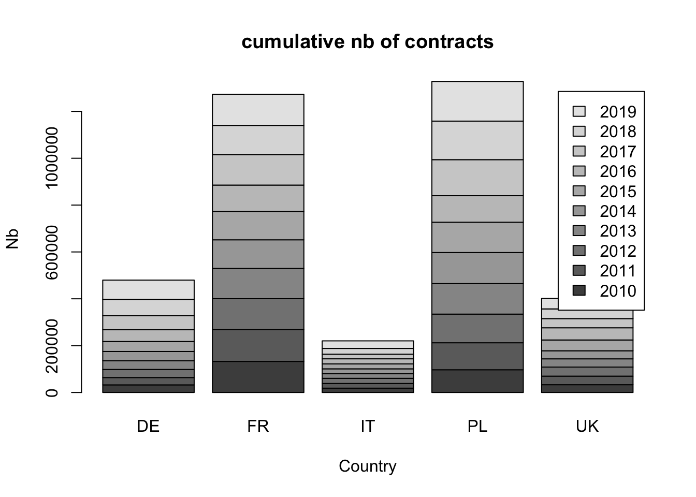
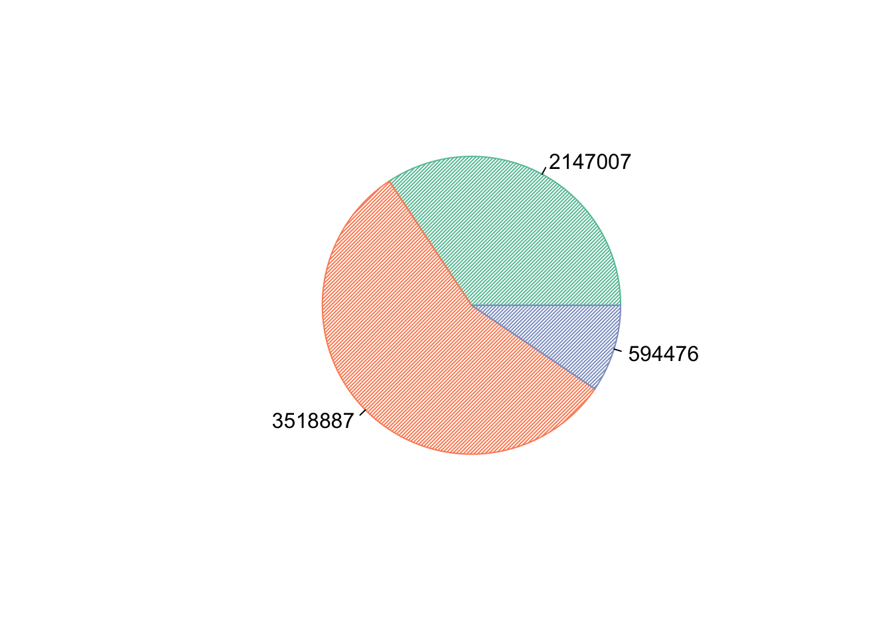
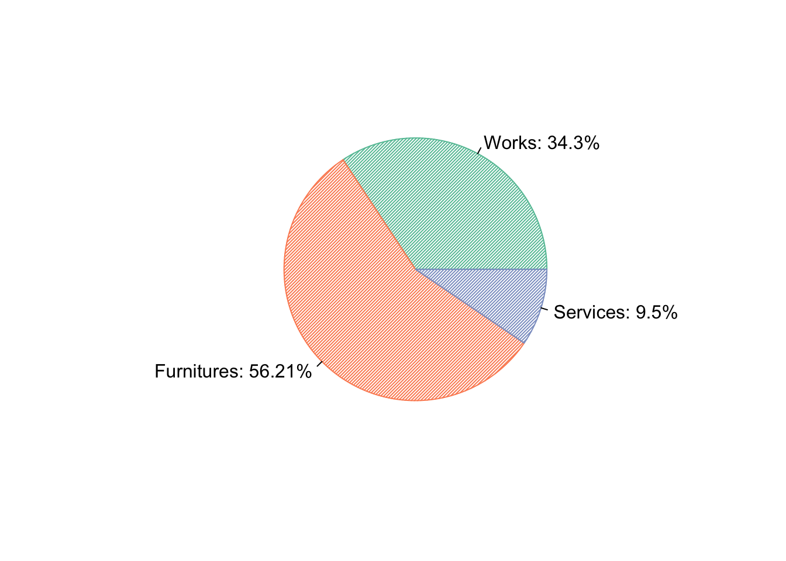
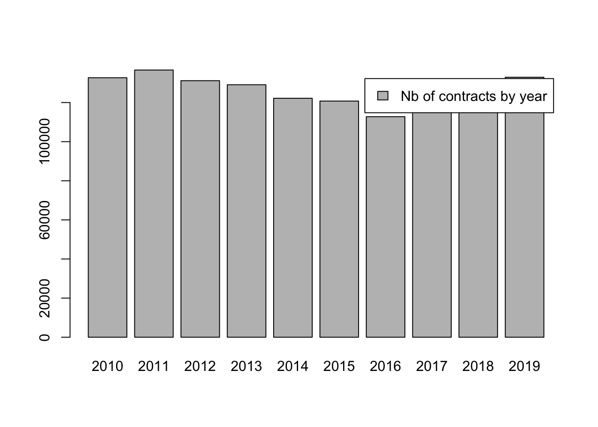
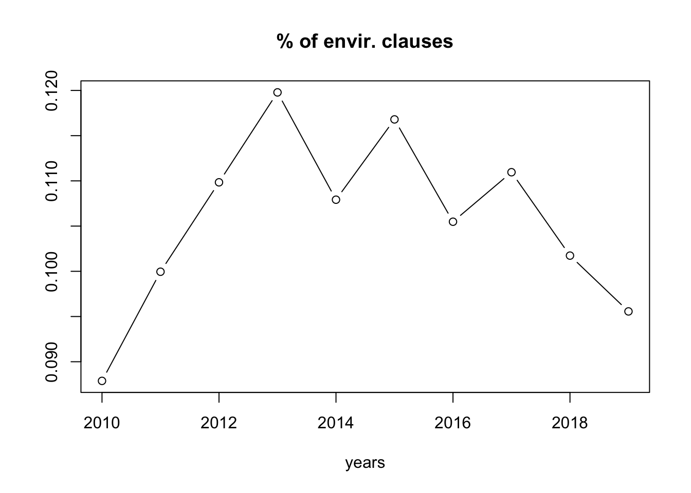

Some data to work up the appetite!
The database represents 6260370 contracts awarded between 2010 and 2019. Here is the number of contracts by buyers country and by year :
library(DT)
library(tidyverse)
#datatable(table(TED$ISO_COUNTRY_CODE, TED$YEAR), colnames = c("Country code", "Year", "Nb of Contracts"))
table_1<-as.data.frame(table(TED$ISO_COUNTRY_CODE, TED$YEAR))
table_1 %>%
datatable(extensions = 'Buttons',
options = list(dom = 'Blfrtip',
buttons = c('copy', 'csv', 'excel', 'pdf', 'print'),
lengthMenu = list(c(10,25,50,-1),
c(10,25,50,"All"))), colnames = c("Country code", "Year", "Nb of Contracts"))
France (as well as Poland) accounts for a large share of the data available under TED.
table_2<-table(TED[which(TED$ISO_COUNTRY_CODE=="FR" |TED$ISO_COUNTRY_CODE=="DE"|TED$ISO_COUNTRY_CODE=="IT"|TED$ISO_COUNTRY_CODE=="UK"|TED$ISO_COUNTRY_CODE=="PL"),]$YEAR, TED[which(TED$ISO_COUNTRY_CODE=="FR" |TED$ISO_COUNTRY_CODE=="DE"|TED$ISO_COUNTRY_CODE=="IT"|TED$ISO_COUNTRY_CODE=="UK"|TED$ISO_COUNTRY_CODE=="PL"),]$ISO_COUNTRY_CODE)
barplot(table_2, legend.text = TRUE, main="cumulative nb of contracts", ylab="Nb", xlab="Country")

The distribution of contracts by main categories gives us, for the entire database:
library(RColorBrewer)
count<-table(TED$TYPE_OF_CONTRACT)
color <- brewer.pal(length(count), "Set2")
pie(table(TED$TYPE_OF_CONTRACT), labels = table(TED$TYPE_OF_CONTRACT), col = color, density = 50, angle = 45)

pie_labels <- paste0(c("Works: ", "Furnitures: ", "Services: "),round(100 * count/sum(count), 2), "%")
pie(count, labels = pie_labels,col = color, density = 50, angle = 45)

Similarly, the type of purchasers corresponds to:`
library(DT)
library(tidyverse)
#datatable(table(TED$ISO_COUNTRY_CODE, TED$YEAR), colnames = c("Country code", "Year", "Nb of Contracts"))
table_2<-as.data.frame(table(TED$CAE_TYPE))
table_2 %>%
datatable(extensions = 'Buttons',
options = list(dom = 'Blfrtip',
buttons = c('copy', 'csv', 'excel', 'pdf', 'print'),
lengthMenu = list(c(10,25,50,-1),
c(10,25,50,"All"))), colnames = c("CAE type", "Nb of Contracts"))
with:
| 1 |
Ministry or any other national or federal authority, including their regional of local subdivisions |
| 3 |
Regional or local authority |
| 4 |
Water, energy, transport and telecommunications sectors |
| 5 |
European Union institution/agency |
| 5A |
other international organisation |
| 6 |
Body governed by public law |
| 8 |
Other |
| N |
National or federal Agency / Office |
| R |
Regional or local Agency / Office |
| Z |
Not specified |
Let us focus on French contracts!
TEDFR <- TED[which(TED$ISO_COUNTRY_CODE=="FR"),]
rm(TED)
rm(table_1)
rm(table_2)
We’ve got 1273002 contracts in the French Database.
table(TEDFR$YEAR)->table_1
barplot(table_1, legend.text = "Nb of contracts by year")
 # Manipulation of the database
In order to focus on effective awarded contracts, we don’t consider raws of the database without any name for the selected supplier. Similarly, sometimes, the award notice reflects an unsuccessful call for tenders. In order to suppress the corresponding lines, it should be noticed that in the database, the WIN_NAME presents terms like “infructueux” or “sans suite”. We now reduce our attention to the successful call for tenders
TEDFR<-TEDFR[which(TEDFR$WIN_NAME!=""),]
TEDFR<-TEDFR[which(str_detect(TEDFR$WIN_NAME, "infructueux")==FALSE),]
TEDFR<-TEDFR[which(str_detect(TEDFR$WIN_NAME, "sans suite")==FALSE),]
We’ve got now only 1156017 contracts in the French Database.
environmental clauses
In order to infer the existence of environmental clauses as specific evaluation criteria, we create a specific variable that take value 1 if environmental concerns appear in the award notice, 0 otherwise. The notice is written in French, such that we consider a environmental concern if we can detect string like “développement durable”, “environnement” (for environnement, environementAL a.s.o), “écologi” (for écologiQUE, écologiE) and “RSE” (Social and Environmental Responsability).
We observe 10.55 % of contracts with environmental clauses.
In order to check that this method makes it possible, over the period, to identify in a relevant way the real presence of environmental clauses in public procurement contracts, one can observe the evolution of frequency over time.
mean_envir<-c()
for(i in 1:10){mean_envir[i]<- mean(TEDFR[which(TEDFR$YEAR==i+2009),]$ENVIR,na.rm=TRUE)}
years<-c()
for(i in 1:10){years[i]<-i+2009}
plot(years[1:10],mean_envir[1:10],type = "b", main = "% of envir. clauses", xlab = "years",ylab="")

local buying
We create a first, very rough indicator of spatial proximity between buyer and supplier. In France, the first two digits of the postal code refer to the department. LOCAL takes value 1 if the public purchaser selects a supplier in this own department, 0 otherwise.
TEDFR$LOCAL<-ifelse(str_sub(TEDFR$CAE_POSTAL_CODE, 1, 2)==str_sub(TEDFR$WIN_POSTAL_CODE, 1, 2),1,0)
34.87 % of public purchasing is made inside the same department.
table(TEDFR$LOCAL, TEDFR$CAE_TYPE)
##
## 1 3 4 5 5A 6 8 N R Z
## 0 49287 189665 33650 285 383 142600 203333 6316 8861 118573
## 1 16019 162150 9896 132 98 63567 80548 2233 6902 61519
TC <- table(TEDFR$LOCAL, TEDFR$CAE_TYPE)
summary(TC)
## Number of cases in table: 1156017
## Number of factors: 2
## Test for independence of all factors:
## Chisq = 33085, df = 9, p-value = 0
round(TC[2]/colSums(TC),2)
## 1 3 4 5 5A 6 8 N R Z
## 0.25 0.05 0.37 38.41 33.30 0.08 0.06 1.87 1.02 0.09
Of course, it varies also a lot depending on the type of the contract :
summary(TC2)
## Number of cases in table: 1156017
## Number of factors: 2
## Test for independence of all factors:
## Chisq = 94973, df = 2, p-value = 0
round(TC2[2]/colSums(TC2),2)
## S U W
## 0.39 0.37 0.73